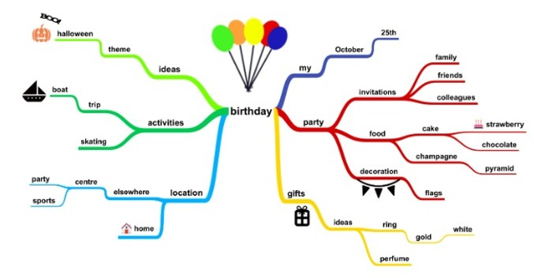

Pertemuan 12
Kalau metode kuantitatif untuk menguji hipotesis, metode kualitatif memungkinkan untuk mengumpulkan Informasi di lapangan lalu dirumuskan menjadi teori. Jadi analisis datanya bersifat induktif.
Contoh judul penelitian kualitatif, biasanya digunakan dalam ilmu sosial:
Analisis Beban Mental Karyawan Divisi Marketing Pada PT ABC
Strategi Komunikasi Politik Partai WOW Selama Masa Pilkada di Kota Depok
Pengembangan Pariwisata Berbasis Masyarakat (Community Based Tourism) Masyarakat Pantai Crystal Bay, Desa Sakti, Kecamatan Nusa Penida, Kabupaten Klungkung
Dalam penelitian kualitatif lebih berfokus pada seberapa lengkap dan dalamnya informasi yang didapatkan oleh peneliti, bukan dari banyaknya jumlah data.
Brainstorming
Mind maps
Cause and Effect Analysis/Fishbone Diagram: gabungan brainstorming dan mind map
Root Cause Problem Solving
SWOT/TOWS
Pendidikan kita diajarkan untuk berfikir linear, khususnya dalam melakukan penelitian yang menggunakan kaidah ilmiah. Dalam praktiknya ada permasalahan yang sebab dan solusinya out of the box yang membutuhkan pemikiran secara lateral.
Untuk dapat menghasilkan ide dan solusi yang kreatif dapat dicapai dengan membentuk kelompok diskusi yang setiap anggotanya dapat berpartisipasi dalam memberikan masukan berdasarkan cara berfikir masing-masing
Kelemahan dan kelebihan: Diskusi tetap perlu terstruktur walaupun sifatnya sebaiknya lebih informal untuk mendorong kreatifitas berfikir. Ada risiko dalam diskusi adanya asumsi, saling mendebat atau saling mengarahkan antar anggota
Berusaha memetakan proses berfikir, mengingat, mengumpulkan informasi, memunculkan ide, mengorganisir dan asosiasi
Menurut para ahli, menggunakan variasi warna dan gambar juga membantu kita dalam mengingat

Kombinasi dari brainstorming dan mind mapping
Awalnya diciptakan sebagai tools dalam proses quality control, namun dalam perkembangannya banyak digunakan sebagai alat dalam mencari akar penyebab masalah.
Dalam menentukan “penyebab” dalam fishbone diagram dapat digali hingga ke “sub-penyebab”, hal ini merupakan salah satu kelebihan dari metode ini karena dapat menggali hingga ke akar masalah dengan relatif mudah tanpa menggunakan metode rumit.
Kelemahan dari metode ini: tidak dapat membedakan tingkat kekritisan masalah dalam diagram yang dibuat, hal ini dapat mengakibatkan terjebak dalam diskusi yang panjang dalam mencari penyebab masalah yang sebenarnya tidak signifikan. Selain ini juga tidak tampak jika ada hubungan timbal balik antar faktor dan penyebab.
Jika sudah diidentifikasi cause dan sub-cause maka dapat dihubungkan dengan teori untuk membangun hipotesis dan menentukan variable independent (X) supaya dapat diteliti lebih lanjut.
Root Cause Problem Solving (RCPS) seringkali disebut juga problem tree analysis.
Dalam membuat pohon masalah akan dapat dipetakan penyebab langsung dan tidak langsung dari suatu masalah.
SWOT juga merupakan alat yang digunakan untuk mengidentifikasi posisi sebuah entitas (biasanya perusahaan, industri, atau negara) dalam menghadapi sebuah masalah.
Semua faktor (internal dan eksternal, positif dan negatif) diidentifikasi dan dikelompokkan ke 4 kategori, yaitu Strength, Weakness, Opportunity dan Threat dalam sebuah diagram.
Strength (kekuatan) dan Weakness (kelemahan) merupakan sumber daya internal yang menjadi kekuatan (strength) dan kelemahan (weakness) untuk mencapai sebuah tujuan. SW ini umumnya kita bandingkan dengan pesaing.
Opportunity (peluang) dan Threat (tantangan) merupakan faktor-faktor di luar kontrol kita yang sangat mempengaruhi kemampuan kita mencapai tujuan.
Contoh SWOT tentang membangun sebuah usaha forwarder:
Strategi dibangun dengan memanfaatkan S&O, mengurangi W, dan mengantisipasi T.
Fishbone diagram \(\rightarrow\) saat ingin mencari kemungkinan penyebab dari sebuah masalah
RCPS \(\rightarrow\) saat ingin mengetahui akar masalah dari sebuah masalah
SWOT/TOWS \(\rightarrow\) digunakan untuk menghubungkan antara sasaran organisasi dan strategi
Dapat dilakukan penggabungan teknik fishbone dan RCPS jika masalah yang dihadapi cukup kompleks dan diharapkan tidak terjadi lagi.
Bryman, A., Bell, E. (2007). Business Research Methods. Second edition. New York: Oxford University Press Inc. :::::